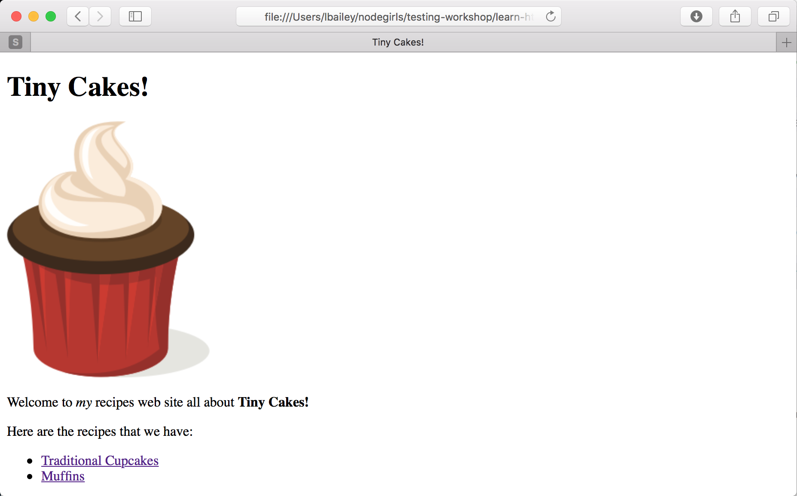
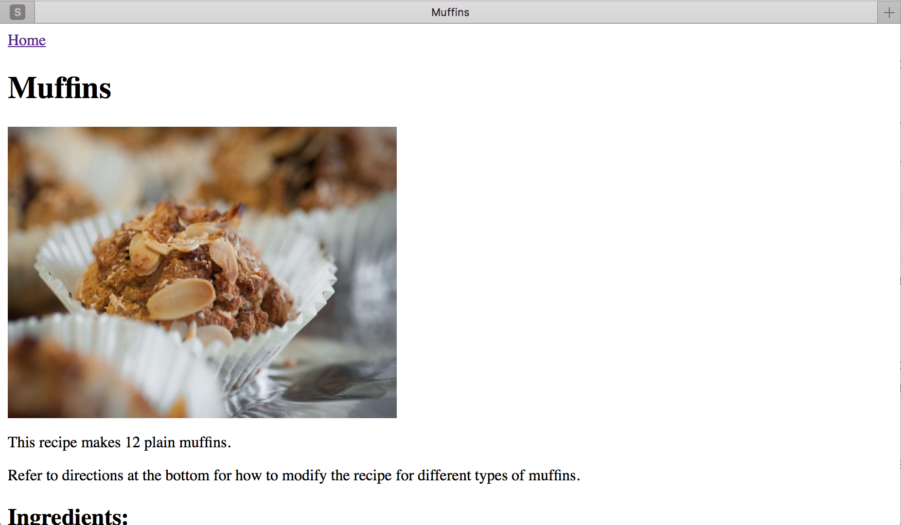

Etapy:
Step 6 - Images
Images
We can add images to our pages using the image tag, <img>.
Let’s add a logo to our homepage above the Tiny Cakes! heading.
First of course you will need some images to use. Go to https://openclipart.org/detail/298756/cupcake-2 and download the small version. Move the downloaded file to our workshop folder and rename it to tinycakes.png
Edit index.html and put the following on the line before the <h1>:
<img src="tinycakes.png" title="Tiny Cakes!" alt="The Tiny Cakes logo, a stylized cartoon cupcake."/>
Save it and refresh the page.

Nice. So what do we have here?
The src attribute specifies the URL for the image. This can be a relative path or a whole URL, just like the href attribute of <a>.
The title attribute should be the title of the image. Some browsers display this as a tool tip on the image.
The alt attribute should be a description of the image. This gets displayed when the image cannot be displayed.
The title and alt attributes are very important for people with limited sight as they might be relying on software to read a page to them.
You can set the height and width attributes on an image as well to control its size.
Update the image tag as follows to make the size a little more reasonable:
<img src="tinycakes.png" title="Tiny Cakes!" alt="The Tiny Cakes logo, a stylized cartoon cupcake." height="47" width="37" />
Notice that the image tag doesn’t have opening & closing tags. It just has a /> instead of > in the tag. This is called a self-closing tag. There are a few of these in HTML. Usually they are tags that specify an element of the page that isn’t text. In this case an image.
Before you go to the next step, try to add an appropriate image to each recipe page. Use a stock image site like https://www.stockfreeimages.com/ to find and save a photo of cupcakes and one of muffins and add them to each of the recipe pages.


In the next step we will learn how to use CSS to take those plain pages and jazz them up a little.